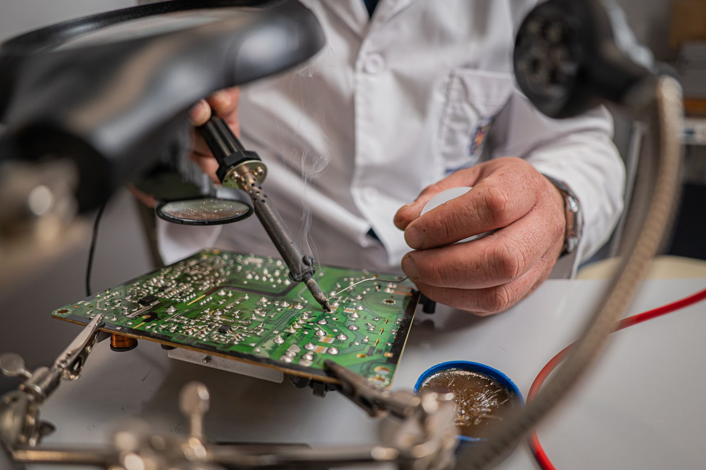

I am Dr Lucia Ferrante. I studied electronic engineering in Turin and spent a decade doing embedded machine learning the conventional way — frame-based pipelines on accelerators, for automotive and industrial sensing. I was good at it, and I believed the datasheets, including my own.
The conversion was not philosophical. A client asked why a prototype's measured battery life was a third of the spreadsheet's, and the honest answer required measuring the whole system instead of quoting the chip. The power meter did not care whose logo was on the board. I have run my practice the way that meter runs: boundary stated, basis printed, conclusion last.
Since 2019 the practice has worked on event-driven hardware — mixed-signal and digital neuromorphic processors, and one memristive prototype I describe in Table H1 with the caution it deserves. The bench is in Turin; the team is me plus one measurement engineer, which is deliberate: every figure on this site passed across one bench and one pair of hands you can name.
What I am not: a hardware reseller, a vendor's benchmark partner, or a brain-computer-interface practice. The work is spikes, energy budgets and measured workloads — systems that sense and decide at the edge, on power budgets that have to survive contact with a battery.
